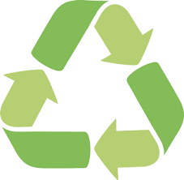

| 1. Menghemat energi | Cara mengurangi pemanasan global yang pertama adalah dengan mematikan
semua alat elektronik yang tidak kita gunakan. Melansir dalri
Department of Energy , AC yang ada di Gedung menjadi salah satu
penggunaan energi terbesar setiap harinya. AC mengumbangkan hamper setengah sebanyak 35% dari penggunaan energi rumahan. Jadi, cara yang bisa kita lakukan adalah dengan membuat ruangan menjadi lebih hemat energi |
 |
| 2. Reduce, reuse, recycle | Mengurangi pemanasan global yang selanjutnya adalah dengan melakukan
reduce, reuse, dan recycle. Reduce adalah kegiatan menggunakan
produk kemasan, termasuk penggunaan plastik seminimal mungkin. Lalu, kamu juga bisa melakukan reduce dengan membeli produk yang dapat digunakan Kembali. Reuse adalah langkah dalam penggunaan kembali benda-benda yang tidak terpakai, seperti kantong plastik dan botol plastik. Sementara itu, recycle merupakan kegiatan daur ulang barang yang tak terpakai, sehingga bisa digunakan kembali, seperti mendaur ulang plastik, kaleng kaca, serta limbah yang dijadikan benda bermanfaat |
 |
| 3. Menanam pohon | Penghijauan menjadi salah satu cara untuk mengatasi pemanasan global.
Proses fotosintesis yang terjadi pada tanaman dan pohon mampu menyerap
karbondioksida dan mampu menghasilkan oksigen. Tanaman juga menjadi sebuah bagian dari siklus pertukaran atmosfer secara alami. Beberapa jenis tanaman juga bisa melawan dalam peningkatan karbondioksida yang disebabkan oleh pabrik ataupun kendaraan |
 |
| 4. Penggunaan transportasi umum | Salah satu penyebab pemanasan global adalah kepadatan penduduk di dunia
yang populasinya semakin bertambah. Dengan pertambahan jumlah penduduk,
maka jumlah kendaraan yang digunakan juga akan semakin bertambah. Dengan begitu, kendaraan bisa mengeluarkan asap yang mengandung gas karbon monoksida. Gas inilah yang sangat berbahaya untuk lingkungan, karena bisa menjadi penghalang dalam pemantulan panas bumi yang bisa menyebabkan terjadinya efek rumah kaca |
|
| 5. Mengurangi pemakaian air panas | Cara untuk mengurangi pemanasan global yang selanjutnya adalah dengan
melakukan penghematan listrik, salah satunya adalah dengan mengurangi
pemakaian pemanas air. Kamu dapat mengurangi penggunaan pemanas air pada 120 derajat untuk bisa menghemat energi. Penggunaan pancuran yang rendah dapat menghemat air panas serta mengurangi hampir sekitar 350 pon karbondioksida dalam per tahunnya |